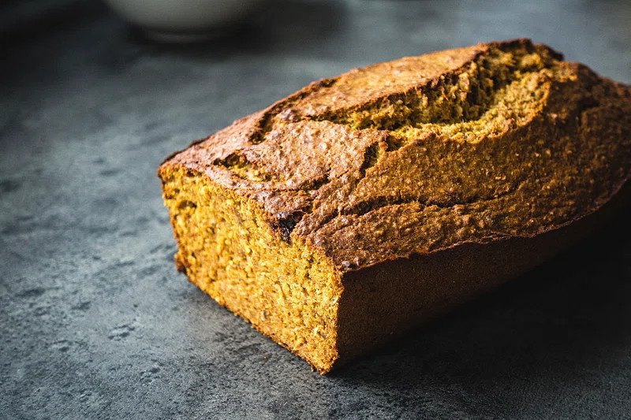

Home
Banana Bread

Description
Banana bread is crowd favorite and easy to make.
If you're looking for something not too sweet, try skipping the butter and use your favorite jam instead.
All of the ingredients are minimally processed and easy to find in most grocery stores.
Ingredients:
- 2 cups all-purpose flour
- 1 teaspoon baking soda
- 1/4 teaspoon salt
- 1/2 cup butter
- 3/4 cup brown sugar
- 2 large eggs
- 3 bananas
- 1 tablespoon cinnamon
Steps:
- Preheat the oven to 350 degrees Fahrenheit.
- Lightly grease a 9 x 5 inch loaf pan.
- In a large bowl, mix the flour, baking soda, and salt until combined.
- In a medium bowl, mix the brown sugar and butter until smooth.
- In a small bowl, mash the bananas until smooth, add in the eggs, and mix until combined.
- In the large bowl, mix in the contents of the medium and small bowls until combined.
- Pour the freshly mixed batter from the large bowl into the greased loaf pan.
- Place the loaf pan on the center rack of the oven.
- Bake in the oven until a toothpick insearted into the center comes out clean--about 60 minutes.
- Remove the loaf pan from the oven and allow it to cool for about 10 minutes.
- Remove the banana bread from the loaf pan and place it onto a wire rack to cool completely.
- Serve and enjoy! (Try it with honey or cream cheese and fresh berries!)